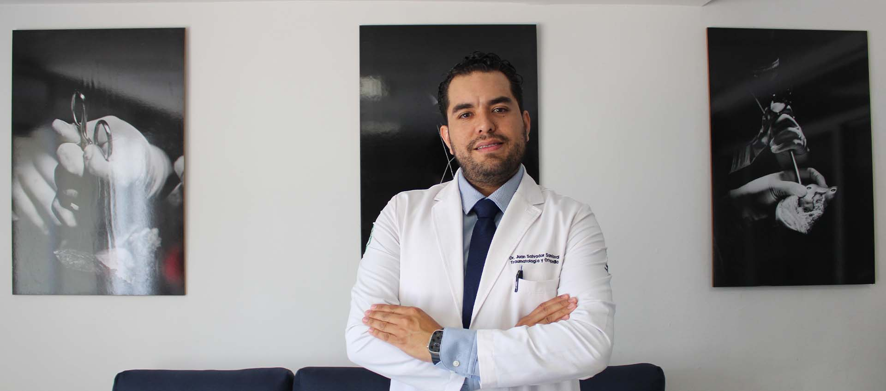
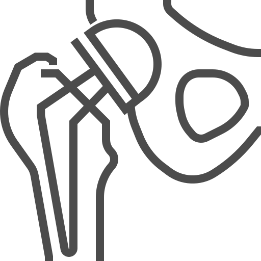

Mi especialidad
Prótesis de Rodilla
La cirugía consiste en sustituir la articulación dañada por una prótesis artificial, aliviando el dolor y mejorando la movilidad.
Leer más →Artroscopia de Rodilla
Procedimiento mínimamente invasivo para tratar lesiones meniscales, cartílago o ligamentos con menor tiempo de recuperación.
Leer más →
Prótesis de Cadera
Reemplaza la articulación dañada para eliminar el dolor y mejorar la movilidad, especialmente en casos de artrosis o fracturas.
Leer más →Cirugía de Reparación de Manguito Rotador
Cirugía para reparar tendones del hombro, mejorando fuerza, movilidad y eliminando el dolor al mover el brazo.
Leer más →Neurólisis por Radiofrecuencia
Procedimiento mínimamente invasivo que bloquea la transmisión del dolor en columna o rodilla, sin necesidad de cirugía abierta.
Leer más →Sobre Mí
Me gradué como Médico Cirujano en la Universidad Autónoma de Guadalajara, donde obtuve una formación integral en ciencias médicas y quirúrgicas, enfocándome en ofrecer un cuidado completo y de alta calidad a mis pacientes. Posteriormente, realicé mi especialización en Ortopedia en el Hospital Centro Médico Nacional de Veracruz, donde perfeccioné mis habilidades en el diagnóstico y tratamiento de afecciones musculoesqueléticas, así como en técnicas quirúrgicas avanzadas para tratar lesiones traumáticas y degenerativas. Actualmente, estoy cursando un Máster en Cirugía Avanzada de Rodilla en la Clínica Centro, avalado por la Universidad Francisco de Vitoria de Madrid España, con el objetivo de mantenerme a la vanguardia en las técnicas quirúrgicas más innovadoras y ofrecer a mis pacientes los tratamientos más avanzados en cirugía de rodilla.
Mis registros profesionales
DGP: 12066711 y Ced Esp: 14232830.
Aviso de Publicidad
2530082002A00044

Lo que dicen mis pacientes
Cada rodilla es distinta. Cada tratamiento, también.
Sobre la consulta
Te ofrezco una valoración personalizada en traumatología y lesiones deportivas. Una vez que solicites tu cita, me pondré en contacto contigo lo más pronto posible para confirmarla vía WhatsApp. Estoy aquí para brindarte la mejor atención para tu recuperación.
Cuéntame tu caso
Coméntame tu lesión o molestia.
Evaluación
Evaluaré tu movilidad y síntomas.
Revisión de estudios
Revisaré tus estudios médicos.
Diagnóstico
Te brindaré un diagnóstico preciso.
Plan de tratamiento
Diseñaré un plan de tratamiento para tu recuperación.
Contáctanos
Escríbeme directo por WhatsApp y te contesto personalmente para agendar tu cita, o revisa mi perfil y opiniones verificadas en Doctoralia.
¡Agenda tu cita por WhatsApp! Ver perfil en Doctoralia
{kind=link}
{kind=link}
{kind=link}
{kind=link}
{kind=link}